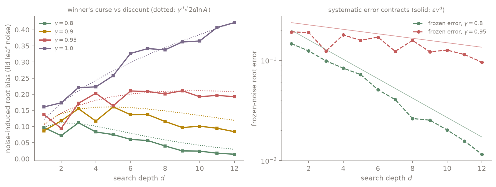
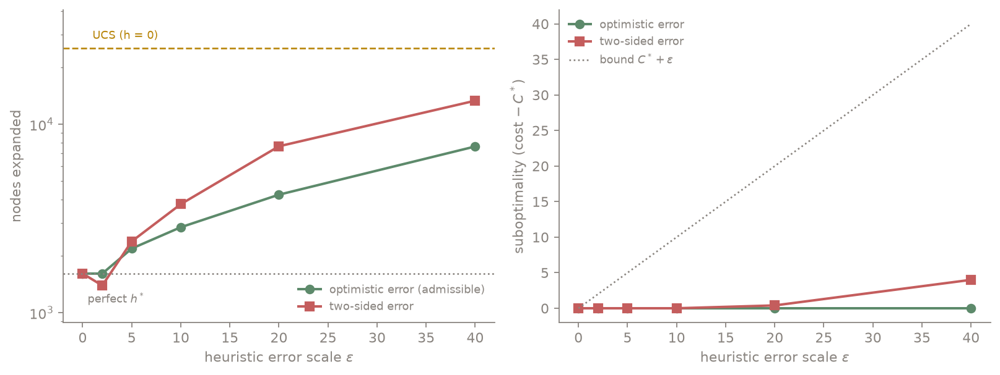

Searching an infinite tree with a broken evaluator
The Problem, Stated Honestly
Take a discounted decision process with $\gamma \lt 1$ and root the search tree at the current state. If the horizon is infinite the tree is infinitely deep; if actions or outcomes are continuous it is infinitely wide. No algorithm searches this object. Every practical planner makes two truncations and hopes: cut the depth at $d$ and substitute an approximate utility $\hat{U}$ at the frontier, and visit only finitely many children per node. A*, uniform cost search, sparse sampling, UCT, and AlphaZero-style search are, from this altitude, different answers to the same two questions: what does each truncation cost, and what kind of evaluator error can the backup survive?
The theory below is classical and attributed as it appears. The two experiments are built for this post, and the thesis they support is one sentence: the backup never amplifies an error function; it amplifies error independence. What saves you, contraction, admissibility, or nothing, is decided by the algebra of the backup and the structure of the error, not by the infinity of the tree.
Depth Truncation Is a Rental Agreement
Searching $d$ plies and evaluating the frontier with $\hat{U}$ computes exactly $(T^d \hat{U})$ at the root, where $T$ is the Bellman optimality operator. Since $T$ is a $\gamma$-contraction in the sup norm, applying it $d$ times to two functions that start $\varepsilon$ apart leaves them $\gamma^d \varepsilon$ apart, and with $T^d V^* = V^*$:
$$ \lVert T^d \hat{U} - V^* \rVert_{\infty} \le \gamma^d \, \lVert \hat{U} - V^* \rVert_{\infty} $$
Evaluator error is not owned, it is rented, and the rent decays exponentially in search depth. The same is true of the thing you actually execute. The standard greedy lemma says acting greedily with respect to any $f$ costs at most $\frac{2\gamma}{1-\gamma}\lVert f - V^* \rVert_{\infty}$ in performance; a $d$-step lookahead policy is greedy with respect to $T^{d-1}\hat{U}$, so its loss is at most
$$ \frac{2\gamma^{d}}{1-\gamma} \, \lVert \hat{U} - V^* \rVert_{\infty} $$
Every extra ply multiplies the effective evaluator error by $\gamma$. This is the implicit license behind systems that pair a mediocre learned value function with deep search: depth converts a bad evaluator into a good one at an exponential exchange rate (Bertsekas and Tsitsiklis's neuro-dynamic programming has the classical statements; Efroni, Dalal, Scherrer, and Mannor sharpened the multi-step greedy picture).
Width: Infinity Is Free, the Horizon Is Not
The depth result assumed full-width backups, impossible on an infinite branching factor. The remarkable classical answer is that width is the cheap direction. Sparse sampling (Kearns, Mansour, Ng, 1999): sample only $C$ children per state-action per level, with $C$ chosen from $\varepsilon$, $\gamma$, and the reward bound, independent of the size of the state space. The sampled tree of size $(CA)^d$ delivers an $\varepsilon$-accurate root value. An infinite state space costs nothing; only the horizon is expensive. Infinite action spaces need structure: under Lipschitz smoothness, the best of $k$ sampled actions is within $O(k^{-1/\dim})$ of optimal, which is why progressive widening (expand roughly $n^{\alpha}$ children after $n$ visits) works, and Munos's optimistic partitioning line (HOO, SOO) turns the same idea into regret bounds governed by a near-optimality dimension.
Selective deepening has its own trap, worth one paragraph of respect: UCT's worst-case regret is hyper-exponential in the tree depth (Coquelin and Munos), because optimism compounding down an infinite tree can chase a mirage arbitrarily long. Half of what a PUCT-style policy prior does in modern systems is tame exactly this, and Grill et al. made the connection precise: the search itself acts as regularized policy optimization.
The Winner's Curse, Measured
The contraction bound treats evaluator error as worst-case but fixed. A noisier and more realistic model injects fresh randomness at every leaf, and here a second mechanism wakes up: every max in the backup preferentially selects optimistic errors, $\mathbb{E}[\max_i (v_i + \epsilon_i)] \gt \max_i v_i$, and the bias compounds with depth. This is the classical lookahead pathology (Nau 1979 and Pearl 1983 for minimax; Bulitko, Li, Greiner, and Levner found it in single-agent search in 2003; it has been exhibited in real-time pathfinding and recently in MCTS). In a discounted tree the curse and the contraction fight, and the fight has a clean predicted shape: selecting the max over roughly $A^d$ leaf noises scaled by $\gamma^d$ gives a bias on the order of
$$ \gamma^d \sqrt{2 d \ln A} $$
which rises until $d^* \approx -1 / (2 \ln \gamma)$ and only then decays, and at $\gamma = 1$ never decays at all.
To measure it I built a deterministic random MDP (20 states, 3 actions, deliberately near-tied rewards, since near-ties are where search decisions are actually hard), searched it as an unrolled tree with no state merging, and injected leaf error two ways: frozen (one error per state, the shape of a value network's systematic bias) and iid (fresh noise per leaf, the shape of a stochastic rollout evaluator). The measured quantity is the noise-induced root error, the backup of the corrupted utility minus the backup of the clean one.

Three findings, all visible in the figure:
- Frozen error contracts on schedule. At $\gamma = 0.8$ the measured root error falls from $0.147$ at depth 1 to $0.012$ at depth 12, riding the $\varepsilon \gamma^d$ line. Systematic evaluator error is exactly the case the rental agreement covers.
- Iid noise follows the curse curve. At $\gamma = 1$ the bias grows monotonically, $0.16$ to $0.42$ over twelve plies: deeper search, worse estimate, the pathology in its classical habitat. At $\gamma = 0.9$ the bias peaks near depth 5 (predicted $d^* = 4.7$) and at $\gamma = 0.95$ it plateaus around depths 6 to 9 (predicted $9.7$) before turning down. At $\gamma = 0.8$ depth helps almost immediately.
- The dichotomy is the point. At $\gamma = 1$ the frozen error stays bounded near $0.2$ while iid noise sails past $0.4$: a max backup is nonexpansive on any fixed error function, but fresh noise hands the selection $A^d$ independent lottery tickets. This is also the literature's own resolution of why real game programs mostly escape the pathology: real evaluators' errors are correlated and value-consistent, which is the frozen mode. A learned value network's systematic bias is rented away by depth; a noisy rollout evaluator's variance is what feeds the curse, and averaging many rollouts per leaf is the standard antidote.
Meanwhile at $\gamma = 1$: the Classical Corner
Shortest-path search is this same problem with no discount and min-plus backups, and its optimality theory is the oldest part of the story. Two classical results, with the conditions that infinite trees make load-bearing:
Uniform cost search is complete and optimal on a locally finite graph whose edge costs are bounded below by some $\delta \gt 0$. Both conditions are sharp, and the second fails prettily: put an infinite spine of edges with costs $1/2, 1/4, 1/8, \ldots$ next to a goal of cost 2, and UCS expands the spine forever, since infinitely many nodes have $g$-value below the goal's cost. On an infinite tree, positive cost per step is what makes "best-first by cost so far" a well-founded idea.
A adds a heuristic $h$, which in this post's language is exactly a utility approximation for cost-to-go. The classical theorem (Hart, Nilsson, Raphael, 1968) is that admissibility, $h \le h^*$ everywhere, preserves exact optimality; the proof is two sentences: some frontier node on an optimal path always has $f = g + h \le C^*$, so the goal cannot be popped with cost above $C^*$. Soften admissibility to $h \le h^* + \varepsilon$ and the returned cost is at most $C^* + \varepsilon$: error passes through additively, once, with no compounding and no rescue. Two structural notes complete the picture. A constant overestimate is completely harmless, because A only consumes the ordering of $f$-values, and adding a constant to every $h$ changes nothing; only error that reorders nodes can hurt. And by Dechter and Pearl (1985), A with a consistent heuristic is optimally efficient*: no algorithm guaranteed optimal on the same information expands fewer nodes, up to tie-breaking. There is no cleverness left on the table; the only remaining currencies are the heuristic's quality and your tolerance for suboptimality.
Notice the inversion against the previous section. In the noisy max world, optimism was the disease. Here, admissibility is optimism, $h \le h^*$ means never overestimating the difficulty, equivalently always optimistic about the remaining cost, and it is not merely tolerated but required for free optimality. The reconciliation is the thesis again: A*'s optimism is systematic and one-sided over a deterministic min-plus backup, where there is no noise for selection to feast on. The winner's curse needs independent randomness; admissibility is the opposite of randomness.
Paying in Nodes or Paying in Cost, Measured
The second experiment makes the classical trade concrete, on a 200 by 200 window of an obstacle grid (30 percent obstacles, $C^* = 290$, exact $h^*$ computed by backward breadth-first search) with three kinds of controlled corruption of $h^*$.

- Optimistic-only corruption ($h^* $ minus random slack up to $\varepsilon$): path cost is exactly optimal at every error scale tested, while expansions climb from 1,612 (perfect heuristic) to 7,625 at $\varepsilon = 40$, on the road to UCS's 25,388. Admissible error is paid in nodes, never in cost, and UCS is just the $\varepsilon \to \infty$ endpoint of this curve.
- Two-sided noise was the experiment that broke my prediction. I expected the overestimating half to buy speed at bounded cost. It bought nothing: at $\varepsilon = 40$ it cost 13,344 expansions and 4 units of suboptimality (the bound allows 40; noise rarely conspires that hard). Random noise scrambles the $f$-ordering, the search thrashes and reopens, and both currencies are spent. Noise on a heuristic is not greed; it is just noise.
- Weighted A, the systematic* overestimate $w \cdot h^*$, is what actually buys speed: at $w = 1.2$ expansions collapse from 1,612 to 290, the length of the path itself, at zero measured suboptimality (against a worst-case bound of $w \cdot C^*$; the perfect-$h^*$ baseline wastes its 1,322 extra expansions tie-breaking among equally promising nodes, and the weight breaks the ties toward the goal).
Which rhymes exactly with the discounted experiment: in both worlds the systematic component of evaluator error is manageable, contracted away by $\gamma^d$ or traded deliberately and boundedly by a weight, while the independent component is pure poison, feeding the winner's curse in one world and ordering-thrash in the other.
One Backup Algebra, Three Verdicts
The same question, what evaluator error can the search survive, gets three different answers because three different algebras process the error:
- *Min-plus, deterministic (UCS, A)**: one-sided optimistic error is free (optimality intact, paid in expansions); two-sided error costs additively, once ($C^* + \varepsilon$); a constant error is invisible; independent noise wastes both currencies. Mechanism: ordering, protected by admissibility.
- Discounted expectation-max (lookahead, sparse sampling, MCTS backups): any bounded systematic error is rented at $\gamma^d$ and policy loss $2\gamma^d \varepsilon / (1-\gamma)$; stochastic leaf error additionally pays a winner's-curse premium $\gamma^d \sqrt{2 d \ln A}$, non-monotone in depth with a hump near $-1/(2\ln\gamma)$. Mechanism: contraction, fighting selection bias.
- Undiscounted max or minimax (game trees, $\gamma = 1$): systematic error is bounded but never repaid; independent noise is amplified without limit as depth grows. Mechanism: nothing. This is the corner where deeper search can genuinely make you worse, and why that corner's practical algorithms lean so hard on evaluation-error correlation and rollout averaging.
The infinities, meanwhile, were never the enemy. Depth infinity is handled by discounting or by positive step costs; width infinity by sampling constants that never see the state space, or by smoothness. What the theory keeps insisting on, from Shapley-style contraction arguments to admissibility to the pathology literature, is that you must know which kind of error your evaluator makes, because the backup will treat systematic and independent error as different substances.
Where This Lives
- Hart, Nilsson, and Raphael (1968); *Pearl, Heuristics (1984); Dechter and Pearl (1985) for A optimality, $\varepsilon$-admissibility, and optimal efficiency; Pohl for weighted A*.
- Kearns, Mansour, and Ng (1999) for sparse sampling; Kocsis and Szepesvári (2006) for UCT; Coquelin and Munos (2007) for the hyper-exponential worst case; Munos on optimistic optimization (HOO, SOO); Grill et al. (2020) for MCTS as regularized policy optimization.
- Nau (1979) and Pearl (1983) for minimax pathology; Bulitko, Li, Greiner, and Levner (2003) for single-agent pathology; Luštrek and Bulitko (2006) for real-time pathfinding; Luštrek's review (2008); and lookahead pathology in MCTS (2022).
- *Bertsekas and Tsitsiklis, Neuro-Dynamic Programming (1996) and Efroni, Dalal, Scherrer, Mannor (2018)* for lookahead policy-loss bounds.
The $\gamma^d \sqrt{2 d \ln A}$ framing of the discount-versus-curse competition, the measured hump, the frozen-versus-iid dichotomy in one testbed, and the A* corruption-type comparison are this post's contribution; every ingredient theorem and the pathology phenomenon itself are the literature's.
An infinite tree is searchable because neither of its infinities is the real cost: discounting or positive step costs pay for depth, and sampling pays for width without ever consulting the size of the state space. The real variable is the evaluator's error, and the backup algebra decides its fate. Min-plus search forgives optimism completely and charges additively for anything else. Discounted max backups rent systematic error at $\gamma^d$ but pay a winner's-curse premium on independent noise, with a measurable depth beyond which deeper finally helps. Undiscounted max backups amplify independent noise without limit. Same tree, same error magnitude, three verdicts, so before trusting a deeper search, ask not how wrong your utility function is, but in what way.